← 返回阅读库 · 原论文目录
论文讲解阅读文档 · 新模型 · v080
Vision Transformers Need Registers[2309.16588]
视频时长 00:06:56；讲解文字 3,152 字符；提取讲解画面 14 张。按视频原顺序阅读，每段文字保留时间戳。
文字来自整段视频的自动语音转写，按自然停顿分段，并与 PPT / 论文页面 / 演示画面对齐。未将讲解压缩为摘要；术语、数字和口述公式请结合画面及原论文核对。 阅读稿已校正规范部分明确术语误识别；原始逐字稿和每处修改记录另行保留。
讲解画面为源视频截图（640×360），不是可编辑 PPT 文件。全片按每秒 2 帧扫描内容变化，逐步展开页保留；连续动画保留代表画面。清晰度受源视频限制。
下载完整资料包 · 含离线 HTML、PDF、Word、全部 PPT 画面和字幕。
原论文与材料
Vision Transformers Need Registers · 下载完整 PDF（21 页）
按时间阅读
00:00:00–00:00:17 · 画面 001
 00:00:00–00:00:17 · 画面 001
00:00:00–00:00:17 · 画面 001大家好,今天我们来快速说一篇论文 Vision Transformers Need Registers，这篇很简单的一个方法就是把 NLP 里面的 Memory Transformer 搬到 Vision Transformer 里面，发现有一点用。它的方法虽然很简单，但是它的故事我非常喜欢。我们直接来看。
00:00:17–00:01:25 · 画面 002
00:00:17–00:01:25 · 画面 002那首先作者意识到在我们长久的训练这些大的 Vision Transformer 的时候，他们出现了一些很好的性质。比如说像 Dino 这个东西，他就发现了说，我 Attention Map 实际上它居然能够包含一定的语义信息。这真是太方便了。你看这里的 Attention Map 它的响应跟图像中这些语义的信号还是有关系的。那么当然也有工作基于这样的 feature 再往下做下游任务，取得了相对较好的结果。
但是对于其他模型，它可能就没有这么好的。比如说你看到第二版本的 Dino 它怎么长成这个样子，还有 DeiT Open Clip 这些东西，你的 Attention Map 里面出现了一些意义不明的这些 Token 这些 Patch。这里作者把它叫 Artifacts。那么这个东西其实就像屋子里的大象一样，它一直存在很多年了，但是有人始终会说哪里有 Artifacts 了，这么多年 downstream task 不都做得好好的吗？
你不问问自己，这么多年这个点数涨没涨，有没有认真训练模型。那么今天作者呢就把这个 artifacts 给它展现出来了。那么更进一步呢，我们发现这些 artifacts 具有一些特点。比如说前两点就是这些 token 这些 artifacts 对应的这个 token 它们的这个 norm 通常是 10 倍甚至 9 倍大于正常的这个 token。但同时呢，它们只占整个 sequence 中很小的一部分。那我们来看这里，我们知道 dino 它的这个语义的信息是比较好的，它这些 token 这些 norm 值呢都比较低。但是你看 dino v2 对吧，就有这么一些显眼包。这是第一个观察。
00:01:25–00:02:11 · 画面 003
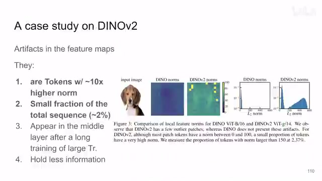
00:01:25–00:02:11 · 画面 003第二个观察这里是一个直方图,你看纵轴这是对数坐标系的 token 占整个 sequence 的比例,那么横轴是每一个 token 它的 norm 的值,你发现 DINO V2 相比于 DINO 多了很多 norm 很大的这些 token,但是这些 token 实际占的比例其实是非常小的,这是作者首先的两个观察。
00:02:11–00:02:51 · 画面 004
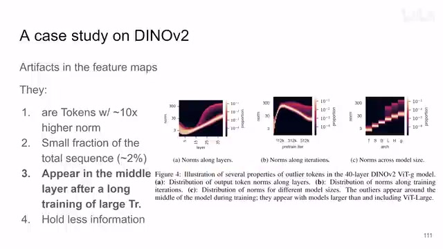
00:02:11–00:02:51 · 画面 004那我们再进一步，这些 token 它是从哪里来的？作者分别研究了说，在一个 transformer 里面它的不同的层，你发现出现在中高层。然后呢，训练的时间，你发现随着训练的时间的增长，这种显眼的 token 就出现了。那最后对于 transformer 的结构来看，transformer 越大，这种奇怪的显眼的 artifacts 这种 token 呢，它也开始出现了。那么这个是作者的第三个观察。
那么再往下，第四个观察其实更复杂一点。简单来说就是这种 token，你看它 norm 叫的很大，但它实际包含的信息是很少的，特别是局部的图像信息是非常少的。脑子越空叫的声音越大，我不由得摸了摸镜子。
00:02:51–00:03:20 · 画面 005
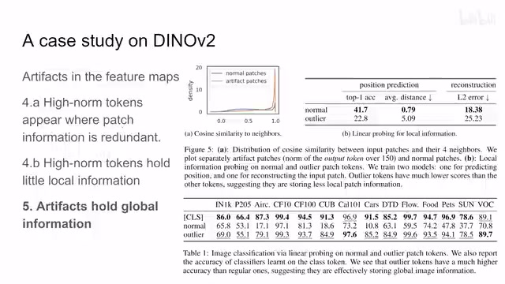
00:02:51–00:03:20 · 画面 005我们具体来看这里，首先这些 artifacts 这些它们出现在哪里，它们会出现一些图像相对简单信息相对较少周围这几个 patch 长得都差不多的时候。你看到这个图，它衡量了你一个 patch 跟周围的 patch 它们的 cos similarity。你发现这种 artifacts patch 这种 high norm 的 patch 它们都是跟周围的这些 patch 非常相像的，而正常的 patch 就没有这些问题。这里说明了它出现了规律。
你看到之前的这些图，他们出现 artifacts 的地方对吧，都是这些图像上相对平滑的这种干净的背景这些地方它出现的，这是一个很有意思的观察。那么再回来，那么第二点呢就是这种 artifact token 它呢包含的局部的信息是比较少的。
00:03:20–00:03:31 · 画面 006
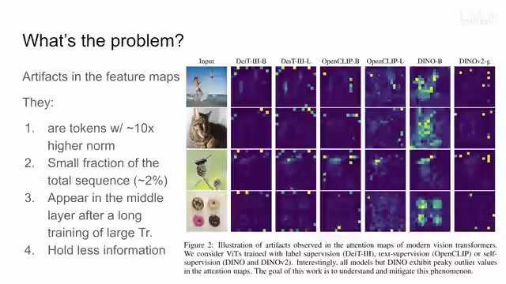
00:03:20–00:03:31 · 画面 00600:03:31–00:03:32 · 画面 007
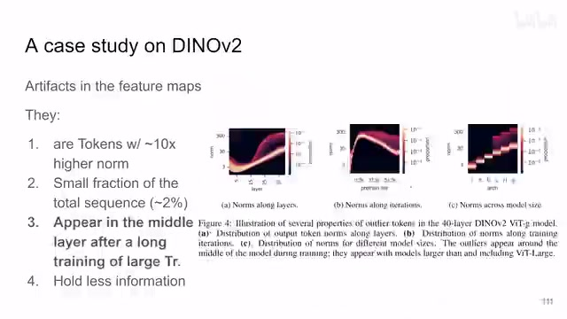
00:03:31–00:03:32 · 画面 00700:03:32–00:04:52 · 画面 008
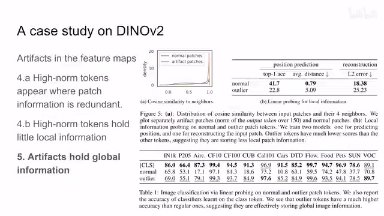
00:03:32–00:04:52 · 画面 008怎么验证这个事情，很自然的我们就想到了用一个下游任务，简单的下游任务去验证它。那么这里作者做了两个下游任务，一个是 position prediction，就是给你这个 token 让你去预测这个 token 在图像中的位置。第二点就是基于这个 token，把你这个 token 对应的这张图片的原始的像素给它重建出来。你看到正常的 token 相对于这些 artifacts 它的性能综合来讲是好很多的，这就说明真的是局部的信息存不了一点。
但是呢，这些 artifacts 他们有一个好。全图像各种地方跑得比其他的这个 local patch。local token 都要快并不是啊其实是这些 artifacts 是包含了更多的包含了全局的信息而不是局部的图像的信息那我们来看到这个实验里面这里呢作者用这个 classification token去做这些下游任务和用这些一般的 patch 去做下游任务那对比还有这些 artifacts 这些 patch去做下游任务你看了你可以看到这些 outlier这些 artifacts patch
它的性能比这个 normal 这个 patch要好上很多的啊很明显的那么经过这样一系列的实验呢作者算是把这个 artifacts它的出现的规律啊这些出现的特点啊就算摸的差不多了
00:04:52–00:05:55 · 画面 009
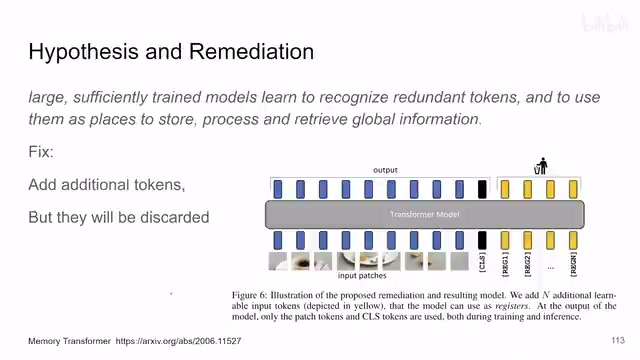
00:04:52–00:05:55 · 画面 009那总结来说呢就是作者发现这些庞大的经过足够训练的模型他会尝试利用这些 redundant 的 token也就是有很多 token 都去描述这个信息比较少的地方那你其实用不了这么多 token 嘛那么你多出来这些 token被这个模型用来存储处理整个图像的全局的信息那么这个呢是作者的一个假设那么首先这个现象它本身它不是一个坏事有 token它能够存储全局的信息最终对我们还是肯定还是有帮助的但是呢就这个特定的下游任务来讲你希望每一个 token 都能够保留它局部的信息那这个时候你的模型学出来一个 global token
那这个时候 global token 的心理特别矛盾一个公鸡它居然要下蛋不是它的活儿它要干不是它的活儿所以为了克服这个现象作者从这个 memory transformer 里面拿出了相同的方法就是在我的 transformer 训练的时候一张图像 classification token 之后再加上额外的这些 register token这些 token 都是 learnable 的 token他们就平常跟他们一起做训练等模型训练完之后
00:05:55–00:06:04 · 画面 010
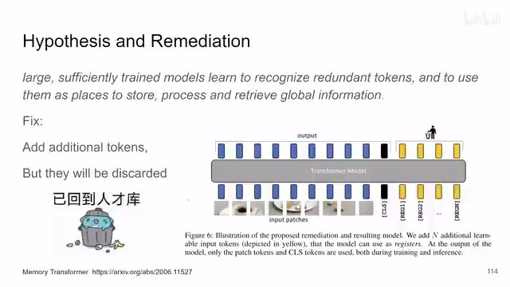
00:05:55–00:06:04 · 画面 010就回到人才库了就被丢掉了我们还是只取前面的这个 classification token 做各种下游的任务，那这个呢就是本文的方法，你发现呢，那这个方法能够无论是对监督的还是对这种 clip 这样子的还是对这种非监督的，它虽然简单但是都能对这些任务起到一定的效果，同时呢加上了这个方法之后，你可以看到这个 token 的这个 norm 它的分布变得干净了很多，很有意思的一个事情，那么当然呢还要做 evaluation，就是我加多少 register token 是合适的
00:06:04–00:06:22 · 画面 011
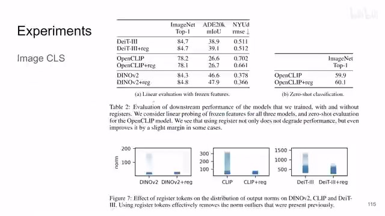
00:06:04–00:06:22 · 画面 01100:06:22–00:06:30 · 画面 012
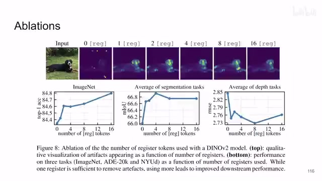
00:06:22–00:06:30 · 画面 012那你看到这里有不同的任务对吧它有这个曲线那么最后呢我们来看一个可视化加了 register 之后你明显看到它的 attention map 变得更干净了这是一个很有意思的发现总来看呢这篇文章方法上非常简单但是呢我还是很喜欢他把一个问题一步一步说清楚的这个研究的方法那么当然在原文中还有更多的实验啊还有一些更细致的观察的感兴趣的朋友呢非常推荐引导原文查看好的那么以上就是我对这篇论文的一个快速的整理那么感谢您的收看再见
00:06:30–00:06:56 · 画面 013
00:06:30–00:06:56 · 画面 01300:06:56–00:06:56 · 画面 014
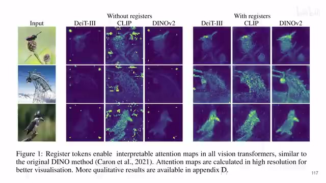
00:06:56–00:06:56 · 画面 014转写与来源说明 · 19 个自动复核提示
保留 74 个原始语音片段，19 个片段触发自动复核提示。提示仅用于定位可能的术语、重复或识别问题，不等于已确认错误。
讲解画面为源视频截图（640×360），不是可编辑 PPT 文件。全片按每秒 2 帧扫描内容变化，逐步展开页保留；连续动画保留代表画面。清晰度受源视频限制。
原视频：paper/合集_2026-10-16_新模型/[论文简析]Vision Transformers Need Registers[2309.16588].mp4
SHA-256：8582edbedea151b43336e56e2f5be2030af14fabd03f639f237dec8e74914a56
这些 artifacts patch
被这个模型用来存储处理
整个图像的全局的信息
那么这个呢
是作者的一个假设
那么首先这个现象
它本身它不是一个坏事
有 token
它能够存储全局的信息
最终对我们还是肯定还是有帮助的
但是呢
就这个特定的下游任务来讲
你希望每一个 token 都能够保留它局部的信息
那这个时候你的模型学出来一个 global token
那这个时候 global token 的心理特别矛盾
一个公鸡它居然要下蛋
不是它的活儿
它要干
不是它的活儿
全文按视频语音与画面制作。原论文可从上方链接下载；完整资料包保留全文、原始逐字稿、字幕和校对记录。